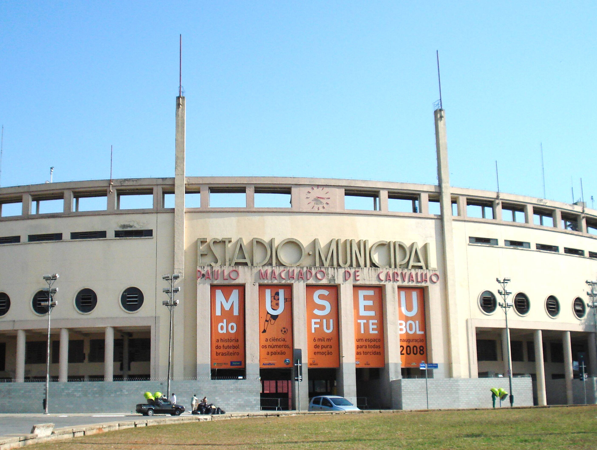
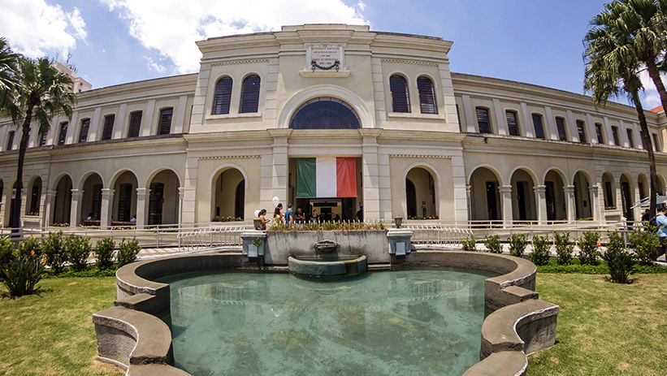
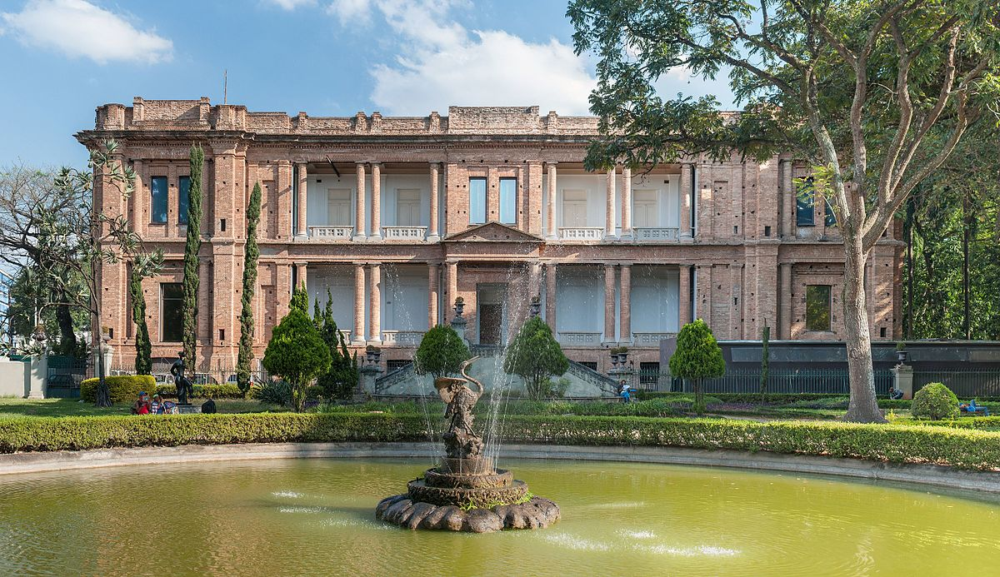
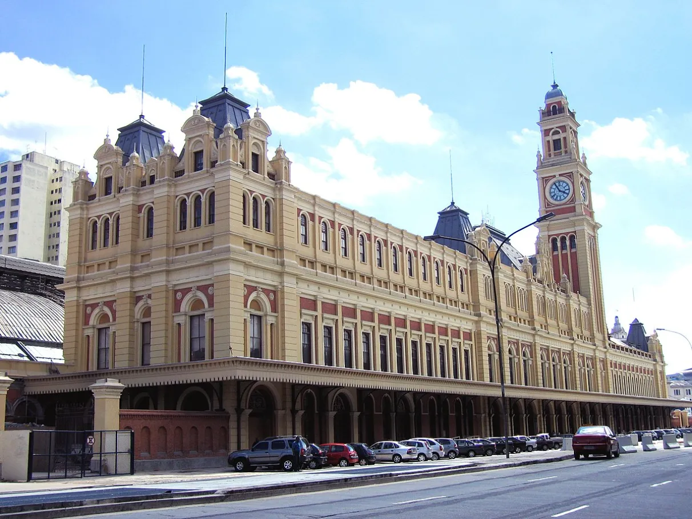
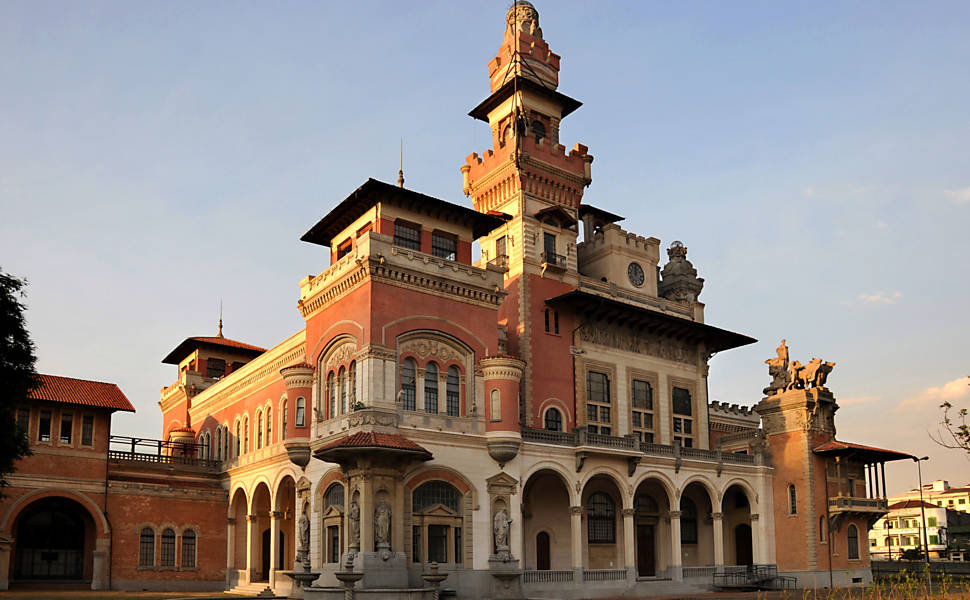
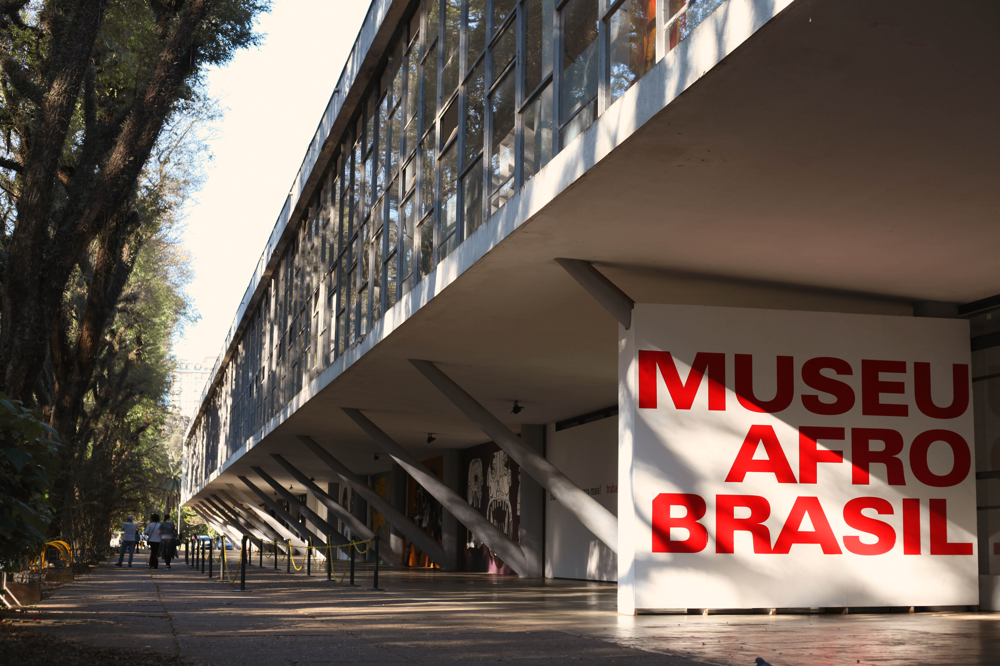

MASP "Museu de Arte de São Paulo"Know More

Museu do FutebolKnow More

Museu da Imigração do Estado de São PauloKnow More

Pinacoteca de São PauloKnow More

Museu da Língua PortuguesaKnow MoreMuseu da Imagem e do SomKnow More

Museu CataventoKnow MoreMuseu Histórico da Imigração JaponesaKnow More

Museu Afro BrasilKnow More